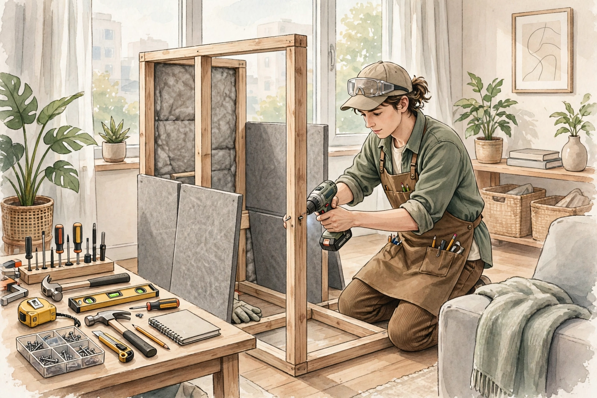

この記事の要点
- 部屋の中に、音を漏らしたくない小さなスペースを作りたい、と思ったことはありませんか？
- 防音室を作るときに、まず分けて考えたいのは、吸音と遮音の違いです。
- 防音を考えるときの、基本的な考え方は、次の4つです。
💡 まず知っておきたいこと：防音室は、吸音室ではありません
防音室を作るときに、まず分けて考えたいのは、吸音と遮音の違いです。壁にやわらかい素材を貼るだけでは、部屋の中の反響は減っても、音が外に漏れるのを止める効果は、限定的です。音を漏れにくくするには、壁や床の重さ、隙間のなさ、振動の伝わりにくさ、という考え方が中心になります。市販の防音室や、防音ブースと呼ばれるものも、同じ考え方で作られています。自作で、完全に音を消すことは、現実的にはかなり難しいことです。まずは、どのくらいの音を、どのくらい減らしたいのか、という目的をはっきりさせることが大切です。楽器の大きな音と、話し声では、必要な対策の大きさが違います。
考えるべき4つの点：重さ、隙間、二重化、振動
防音を考えるときの、基本的な考え方は、次の4つです。1つ目は、重さです。重い壁ほど、音を通しにくい傾向があります。薄い板1枚では、音は通りやすい傾向があります。2つ目は、隙間です。ドアの隙間や、換気口、コンセントの周りなど、わずかな隙間からも、音は漏れます。隙間をふさぐことは、重い壁を作ることと同じくらい大切です。3つ目は、二重化です。壁を二重にして、その間に空気の層を作ると、音が伝わりにくくなる場合があります。ただし、二重にするだけでは十分ではなく、重さと隙間の考え方も、一緒に考える必要があります。4つ目は、振動です。床や壁に直接触れているものから、振動が伝わる場合があります。床に置くものは、振動を伝えにくい素材の上に置く、壁から少し離す、といった考え方が、目安になります。
換気と、暑さと、安全
防音室を作るときに、見落としやすいのが、換気です。隙間をなくして密閉すると、空気がこもり、暑くなったり、息苦しくなったりする場合があります。換気のための穴を開けると、そこから音が漏れる、という矛盾があります。換気と防音の両立は、防音室づくりの中でも、難しい点の1つです。照明や、電気製品の熱、火災のときの避難経路についても、考える必要があります。密閉した小さな部屋で、長時間過ごす場合は、体調にも気をつけてください。電気工事や、大きな構造の変更が必要な場合は、自分だけで判断せず、専門家への相談をご検討ください。
賃貸と、費用と、手間の考え方
賃貸の部屋で防音室を作る場合は、まず、管理会社への確認が必要です。壁や床に穴を開ける、大きなものを置く、といった変更は、原状回復の条件に関わります。置くだけ・組み立てるだけのブース型のものは、賃貸でも取り組みやすい場合がありますが、部屋の広さや、搬入経路、床の耐荷重についても、考える必要があります。費用は、材料費だけでなく、工具や、失敗したときのやり直し、処分の手間も含めて考えるのが、無難です。最初から大きなものを作るのではなく、小さな範囲から試して、効果を確認しながら考える、という進め方も、1つの方法です。このページでは、特定の商品の紹介や、商品リンクの掲載は、まだ行っていません。準備ができ次第、広告であることを明記したうえで、こちらで紹介していく予定です。
⚠️ 注意
このページの内容は、建築や音響工事の専門的なアドバイスではありません。自作の防音室で、すべての音を消すことはできません。目安として、無理のない範囲で考えてみてください。構造の変更や、電気工事が必要な場合は、管理会社や専門家への相談をご検討ください。安全に関わる部分は、自分だけで判断しないでください。